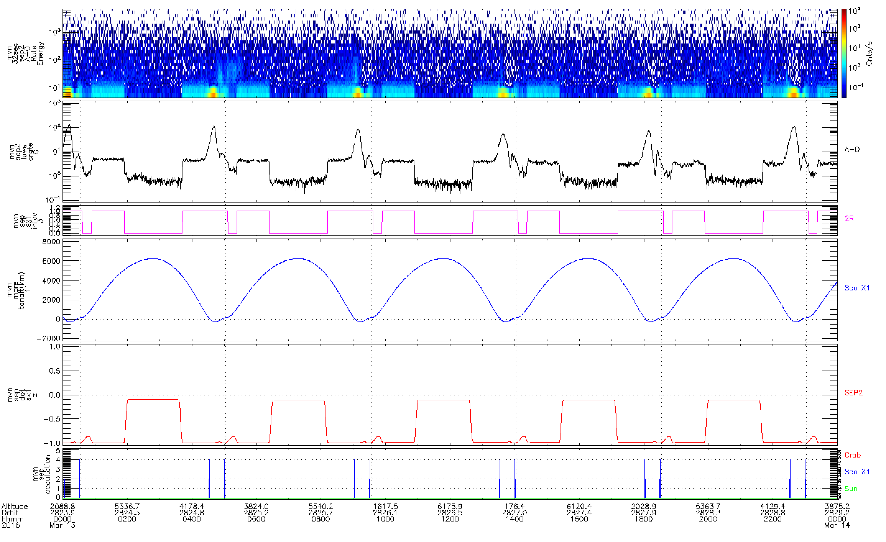
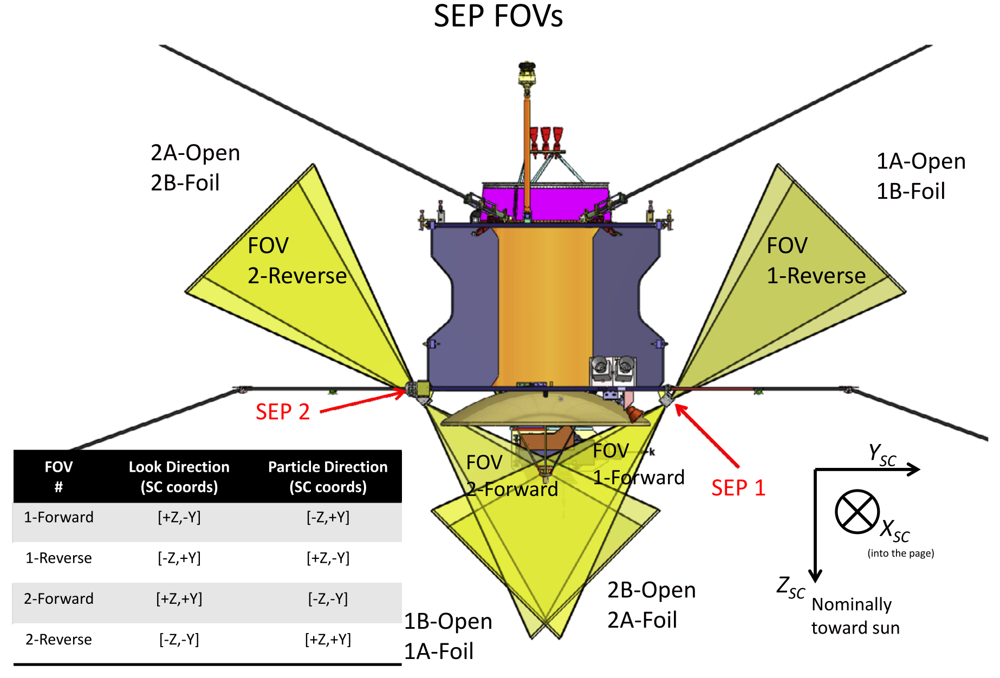
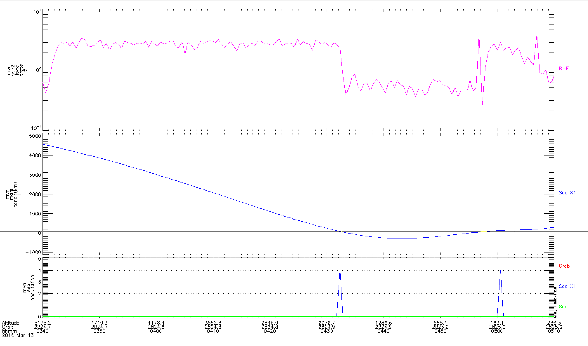
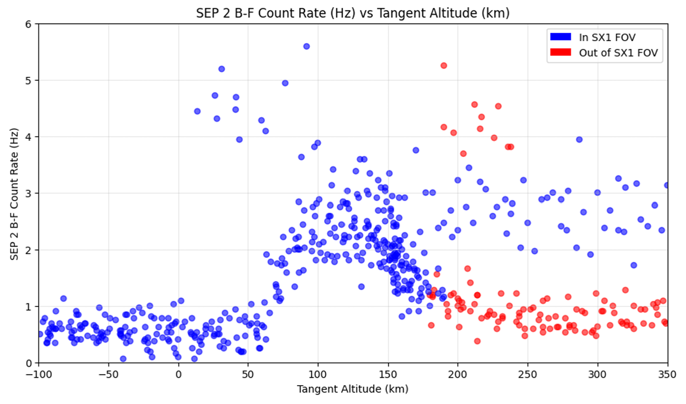
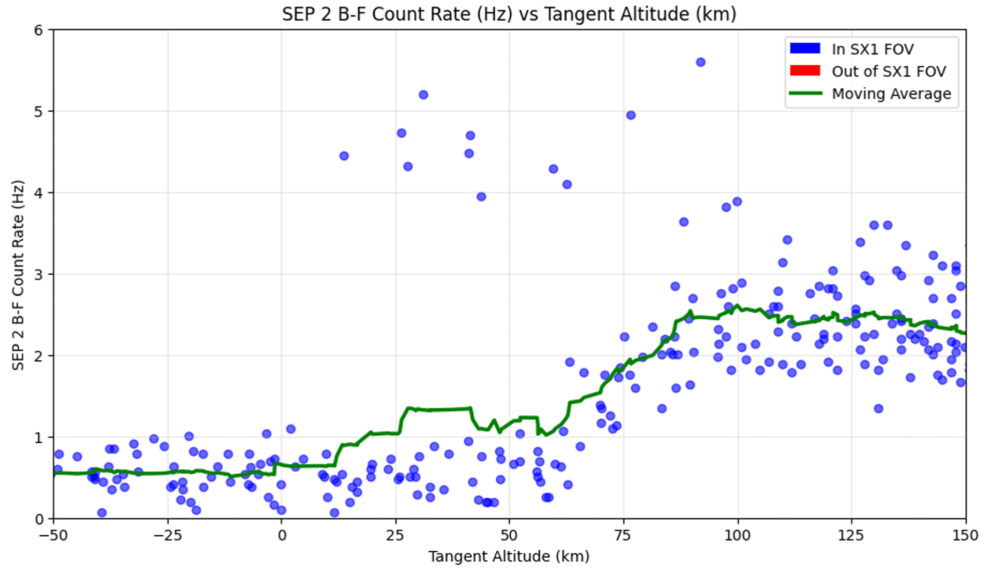

The Mars Atmosphere and Volatile Evolution (MAVEN) satellite entered orbit on September 21st, 2014, with the objective of understanding the Martian upper atmosphere. The focus of my research was on the Solar Energetic Particle (SEP) instrument, which is intended to measure high-energy electrons and ions that enter the Mars atmosphere from the sun. This informs how events such as solar flares or coronal mass ejections affect the loss of Mars' atmosphere due to the interaction of high-energy particles with atmospheric particles through phenomena such as ionization or sputtering.
On March 13th, 2016, the first observation of ~10 keV X-rays from Scorpius X-1 was made, a measurement the SEP instrument was not originally intended to make. Since the density of the atmosphere increases as the tangent altitude from the surface of Mars decreases, lower X-ray counts are observed as MAVEN's tangent altitude with Scorpius X-1 decreases, i.e., during the occultation. This observation is exploited to calculate the numerical density of Mars. The observable altitude range is 50 km - 100 km, a range that is significantly difficult to probe using other techniques. Only one other study using the Phobos 2 spacecraft has been able to observe the 80 – 130 km region using X-ray occultations.
Using the IDL data analysis software, Numpy, and Matplotlib, I carefully identified and plotted a set of variables that agree with the findings in the original study by my mentor, Ali Rahmati.

The first panel in Figure 1 depicts the SEP 2 A-O Rate Energy, where we can see a higher flux of particles arising periodically, with a large spike at a particular region in these intervals. The second panel, which depicts the SEP 2 A-O detector's low-energy particle counts, matches this exact pattern. To confirm that the source of these particles is Scorpius X-1, the sx1 infov boolean is plotted (panel 3), along with its dot product with SEP 2 (panel 5). The dot product is -1 when the higher flux is detected, where the negative indicates that the rear side of the instrument is aligned with Scorpius X-1. As seen in Figure 2, the 2A-Open detector of SEP2 is on the reverse side of the instrument, which confirms these findings.

So far, it has been shown that the higher A-O Rate Energy correlates with Scorpius X-1 in the FOV of the SEP 2 instrument, confirming that it is the X-ray source of the observed increase in energy flux. Panels 4 and 6 depict the tangent altitude with Mars and the SEP occultation, which are plotted to explain the large red spike in energy flux at each interval. The spike correlates with a negative tangent altitude and occultation, highlighting the Mars-shine phenomenon. This is attributed to noise due to the detection of photons reflected from the sunlit disc of Mars; these counts are unrelated to the X-rays from Scorpius X-1. Since the A-O detector is open, it is highly susceptible to these photons and would therefore be insufficient to use for characterizing the atmosphere.
According to Figure 2, the SEP 2 B-F detector lies at the same orientation as A-O, but is significantly more 'blind' to Mars shine due to the foil over its detector, which blocks lower energy photons. In order to leverage X-ray occultation data to characterize Mars' atmosphere, we must identify the altitude at which the X-Rays pass through the line of sight and correlate this with the B-F count rates.

Figure 3 depicts a sharp drop in count rates as the tangent altitude decreases in a small interval before occultation. This is attributed to the fact that the Mars atmosphere is denser at lower tangent altitudes, making it increasingly difficult for X-rays to reach MAVEN. To further investigate and compare the count rates directly to tangent altitude, the data for several orbits was exported to CSVs and analyzed using Numpy and Matplotlib.

Figure 4 is plotted to show the raw data points that align with when Scorpius X1 was in FOV with the SEP 2 instrument. It's observed that all data points in the -100 – ~150 km range are in FOV with Scorpius X1. To characterize Mars' atmosphere, we focus on the region where Scorpius X1 is in FOV, and we see a significant change in X-ray count rates. Figure 5 focuses on this interval, demonstrating an increasing trend in the 50 – 100 km range, as depicted by the moving average.

By exploiting this correlation, we can generate a profile for the neutral density of Mars' atmosphere in the 50 – 100 km range. These correlations provide the intuition and framework for characterizing Mars' atmosphere using X-ray occultations, the primary focus of my research. For a further look at generating the density vs. altitude profile, the exact derivations can be found in Rahmati's paper.